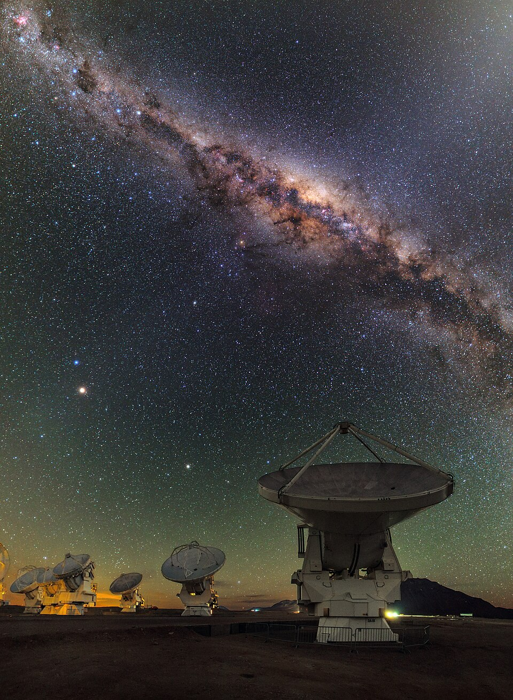

Descubra a Astronomia e os Mistérios do Universo
Bem-vindo ao Clube Espacial, o ponto de encontro ideal para todos os apaixonados pelas estrelas e pelo cosmos.
Aqui pode explorar os segredos do universo, desde o estudo de nebulosas gigantes até à descoberta de planetas distantes.
Navegue pelas nossas atividades, ligue-se à nossa comunidade e descubra tudo o que existe muito além do horizonte.